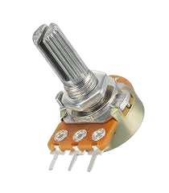

Potansiyometre

Ayarlanabilir direnç
Nedir?
Potansiyometre, döndürülerek direnç değerini değiştiren bir devre elemanıdır. Ses seviyesi veya ışık şiddeti kontrolünde kullanılır.
💡 Not: Üç bacağı vardır: iki uç direnç, ortadaki ayarlanabilir çıkış.
Kullanım Alanları
- Analog giriş ayarları
- Ses ve ışık kontrolü
- Prototip devreler